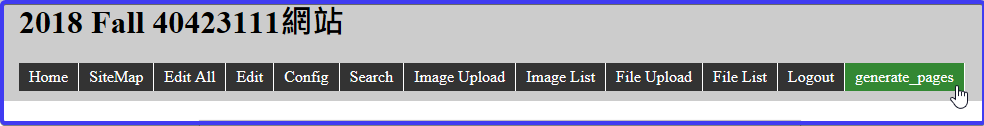

2018 Fall 40423111網站
Home
Site Map
reveal
blog
簡介
CMSimfly 網站
各組必須自行更改 Config 中的網站標題, 且每次完成近端動態網頁編輯後, 以 generate_pages 按鈕, 將動態網頁資料轉為靜態網頁資料, 之後再新增、提交並推送到遠端倉儲.
reveal 投影片
pelican 網誌
操作影片
Week1
心得1
Week2
心得2
Week3
Onshape
homework1
homework2
Python 手冊
OnShape 手冊
Fusion 360
心得1 <<
Previous
Next
>> 心得2
Week2
編輯網誌
利用p37開啟近端作業
https://localhost:8443 顯示靜態網頁
https://localhost:8444 顯示動態網頁
目錄分欄方法
超連結
插入圖片
在靜態網頁編輯完成後，需按下generate_pages，才會轉到動態網頁同步

心得1 <<
Previous
Next
>> 心得2